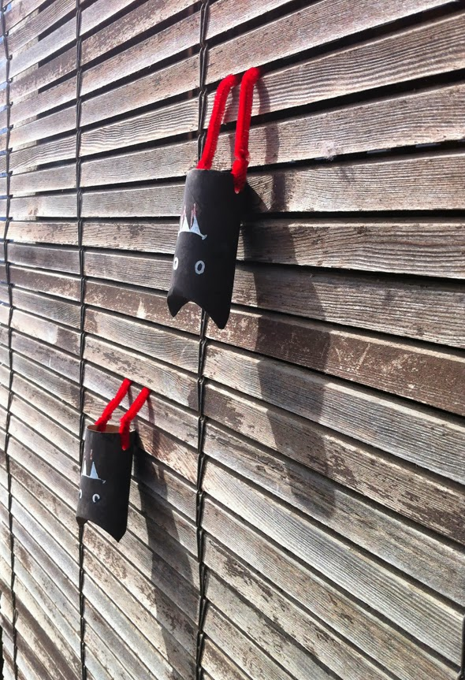

Diese Fledermäuse aus schwarz angemalte Toiletten Papierrollen mit Beinen aus Pfeifenreiniger, können aufgrund ihrer flexiblen Füße überall hängen.


Diese Fledermäuse aus schwarz angemalte Toiletten Papierrollen mit Beinen aus Pfeifenreiniger, können aufgrund ihrer flexiblen Füße überall hängen.

So einfach, aber sehr spaßig. Die Kinder aus Noahs Klasse (ein paar wunderbare Kinder) bei der Herstellung von Papierarmbändern aus farbigem Papier und Stanzern.
Weiterlesen →
DE , EN , ES . Give away Tüten von Leos Geburtstag. Riesen Konfetti und Eulen- Anleitung. Durch das große Interesse an der Anleitung könnt Ihr…
Weiterlesen →
Und wenn wir keine Briefe bekommen, machen wir die Briefmarken selber und erfinden die Länder aus denen sie kommen. Länder, in denen Hunde ohne Flügel fliegen,…
Weiterlesen →
Man bekommt ja immer weniger Briefe nach Hause, das macht Briefmarken noch wertvoller! Wir ordnen sie nach Ländern und suchen diese auf der Karte, die wir…
Weiterlesen →
Ein Karton -ein Flugzeug zum Fliegen oder zum Befördern von Passagieren. Hergestellt für meine Lieblingsbücherei (und mehr): Leolo in Valencia .
Weiterlesen →
Selbst gemachtes Washi Tape für die Dekoration von einem Umschlag. Man faltet das Papier und schneidet es wie für eine Girlande und fixiert wird es mit…
Weiterlesen →